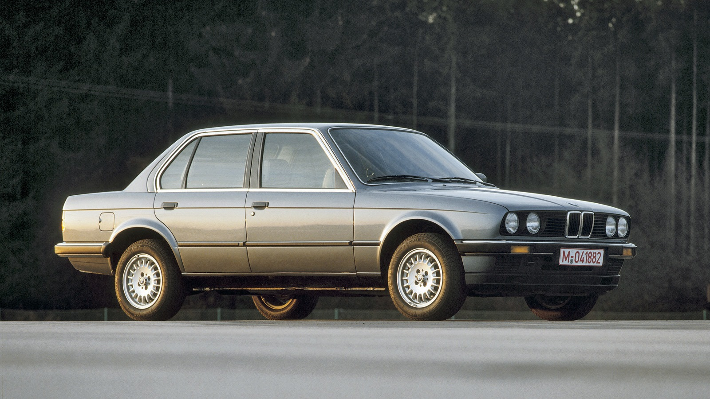
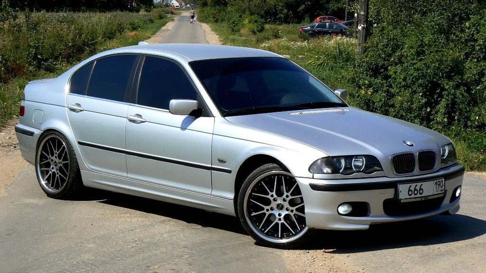
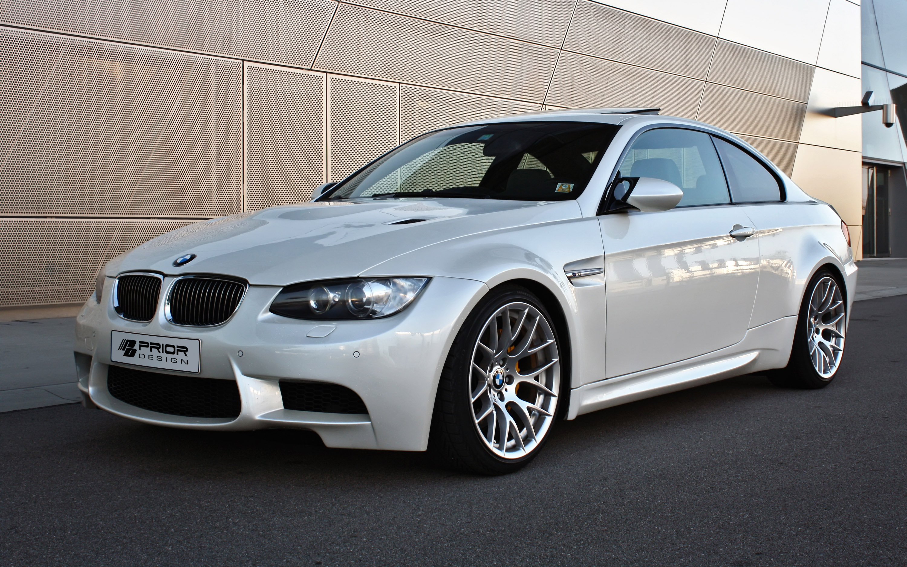

Первая версия BMW M3 (E30) была запущена в 1986 году
и предлагалась только как двухдверный седан.
С середины 1988 года M3 также предлагался как кабриолет. Осенью 1992 года была
представлена версия-преемник на базе E36, двухдверный вариант
3-й серии впервые стал называться купе. С 1994 года он также
был доступен в виде четырехдверного седана и кабриолета.
Третья версия М3 (на базе Е46) выпускалась с середины 2000 года
по лето 2006 года только в кузовах купе и кабриолет.
Четвертая версия M3 (на базе E90/E92/E93) впервые с 1999 года
была доступна с кузовами седан, купе и кабриолет.
Впервые у кабриолета вместо тканевого верха была трехсекционная складная стальная крыша.
